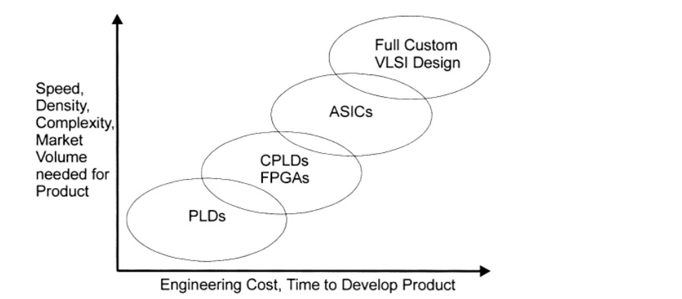
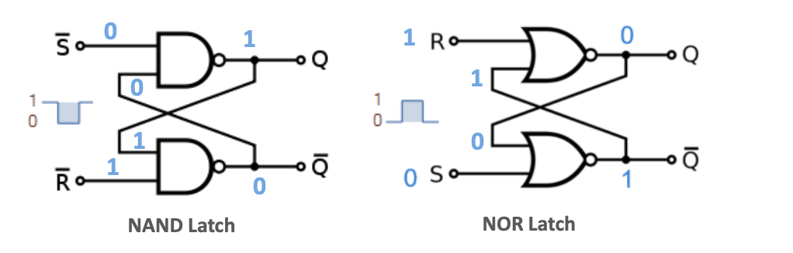
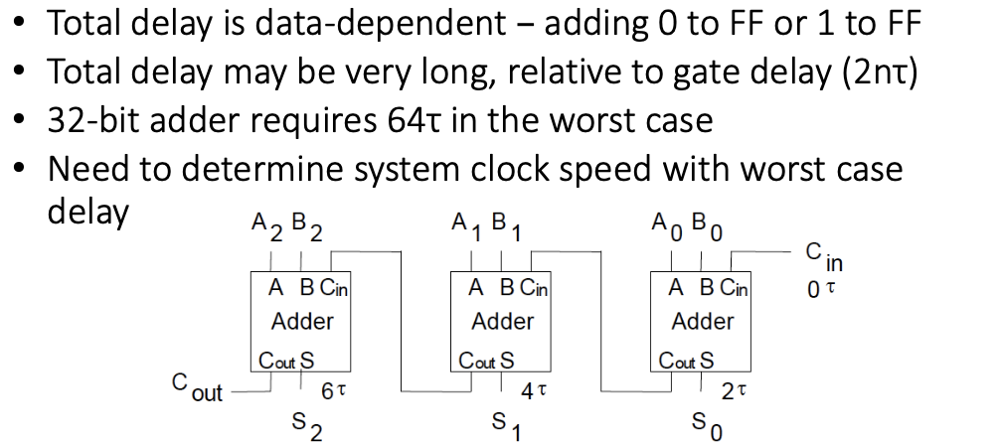
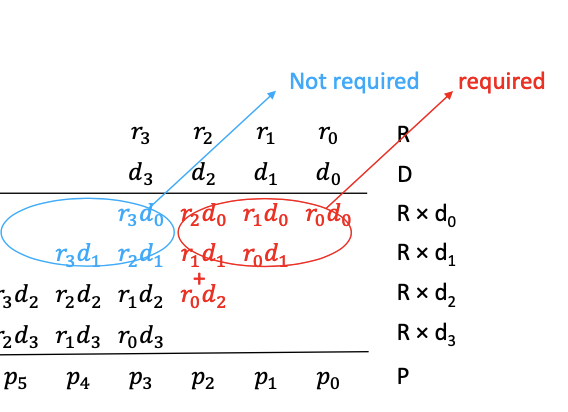

Digital Electronics¶
I: Logic Design Part-1¶
1: Introduction¶
-
Design based on Boolean algebra using combinatorial logics gates and sequential logic.
-
Computer-aided design used and hence the inclusive of VHDL for hardware description.
1.1: Building blocks¶
- Basic logic gates and their inverses:
1.2: Logic Integration¶
-
Discrete elements:
- Assemble gates from transistors, diodes, etc.
-
SSI, MSI - integrated circuits.
-
LSI, VLSI (very large IC)
- More gates on a chip
-
Design style progress:
- Programmable, semicustom and custom.
1.3: Digital logic Structure¶

1.4: CMOS transistors¶
- MOSFETs are voltage-controlled switches used to make logic gates.
- CMOS Inverter can be built using two transistors.
- CMOS two input NOR Gate:
- CMOS four-input NAND Gate:
-
Gates with more than four inputs are rarely implemented directly, which can be composed of multiple gates with fewer inputs.
-
The negative logic gates can used as universal gates.
2: Programmable logic¶
2.1: Programmable logic¶
-
The generalized logic circuits can lead to a possibility of arbitrary logic, hence the Programmable Logic Array (PLA).
-
Based on the fact that nay Boolean function can be represented as a sum of products.
-
PLD based on a PLA consists of a programmable array of AND gates and a fixed array of OR gates.
2.2: Sum of products¶
-
Any Boolean function can be represented as a sum of products.
-
And a boolean function can be found through a truth table.
2.3: Sum of products direct implementation¶
- The PLA is divided into the AND plane and OR plane:
- The outputs of the AND plane are the product terms.
- Then these products terms become the inputs of the OR plane.
2.4: Buffering implementation¶
- Each input variable needs to have both positive and negative wires:
2.5: Programmable Gates¶
For example of an AND gate with \(x_0\), \(\bar{x_1}\), \(x_2\) three inputs:
if connects to the OR array:
We can also use the textual description:
This plane is then defined by this "bit map".
With n inputs and m outputs, the size of PLA can be calculated as m(2n+q) cells.
2.6: Minimization of PLA equations¶
-
For special-purpose PLA, their size can be minimized.
-
The target of minimizing are:
- The total number of gates and as few gates as possible.
- Then number of inputs into each gate as small as possible.
-
For PLA, the following wires going into each gates (n) and number of OR gates (q)
-
The number of AND gates and the inputs into each OR gates can be reduced.
For example, \(y_0 = r_0\) and \(y_1 = r_0 + r_2\), \(r_0\) appears twice in outputs. To minimize, it only needs to be created once.
- PLA minimization is finding equivalent formulas to reduce m.
2.7: From truth table to PLA bitmaps¶
-
Using the RHS of truth table forming the OR plane:
-
Using all the value '1' in LHS forming AND plane positive column:
- Using all value '0' in LHS forming AND plane negative column:
2.8: Sum-of-Product SOP¶
We can deduce the sum-of-product formula from the truth table value:
- Firstly, find out the SOP using result '1' lines:
- Next step, rewrite the formula to product-of sum form (POS):
2.9: Basic rules of Boolean algebra¶
2.10: AND/OR vs NAND/NOR implementation of SOP expression¶
- Implementing an SOP expression simply requires ORing the outputs of AND gates.
- NAND gates can be used to implement an SOP expression:
2.11: The Karnaugh Map (K-map)¶
-
The Karnaugh map can be used to minimize the Boolean function z(a,b,c).
-
First write down the true table in K map:
- Then draw the circle to combine the nearly blocks:
-
The result will be \(z = a\bar{b}+c\)
-
The same for 4 variable K-map:
- The result will be \(z = a\bar{b}+a\bar{c}+\bar{b}\bar{c}\)
2.12: Multiple output minimization¶

-
The key point is to find common-product term.
-
Increase the number of AND gates, decrease the number of m.
-
For example of:
- The first step is to find all ANDs:
- Finally we find that m reduced to 2:
2.13: Hardware implementation of connection bitmaps¶
-
Hard-wired: NOT programmable.
-
Single-time programmable: WORM (Write once read only).
-
Multiple-time programmable: connections done through transistors switches controlled by external signals.
2.14: Diagram review of PLA¶
- Fuses used for non-programmable and single programmable.
- CMOS (transistors) used in multiple programmable device.

2.15: Full programmability¶
-
Full programmability only requires one of the plane to have programmability:
-
AND gates fixed and programmable OR gates are enough for full programmability.
2.16: More complex K-maps¶
- Minimize the 5-variables expression fro example:
-
We can go with a 3D presentation of the K-map.
-
\(z = f(a,b,c,d,e)\) can be expressed as $ z= f_{e=0}(a,b,c,d) + f_{e=1}(a,b,c,d)$.
- For six variables:
- To solve the problem in example, we can rewrite to:
then
- The result finally be \(G = X\bar{Y}\bar{Z} + V\bar{X}\bar{Z}\)
II: From PLAs to FPGAs¶
1: PLA Usage¶
- General PLA in CPU:

The control PLA takes in information and play a role as the controller.
Usually not optimizable, but fully programmable at design-time to accommodate CPU.
- General and Custom PLA:
2: Complex Programmable Logic Device (CPLD)¶
-
Complex devices extend the idea of programmable logic further.
-
A matrix of PLAs and programmable interconnection array (PIA)
3: Field programmable gate array (FPGA)¶
-
FPGA employs another approach programmable logic (not based on PLA)
-
The three basic elements are configurable logic block (CLB) or logic array block (LAB), the interconnections, and the IO Blocks.
-
Each CLB is made up of multiple smaller logic modules and a local programmable interconnect used to connect logic modules within CLB.
-
General FPGA cell:
-
SRAM -Based FPGAs
- FPGAs are either non-volatile because they are based on SRAM.
- FPGA Cores:
- A hard core is a portion of logic in an FPGA that is put in by the manufacturer to provide a specific function and that cannot be reprogrammed.
- Specific FPGA Devices:
- Example FPGA block diagram: Several manufacturer produce FPGAs as well as CPLDs.
III: Memories in logic design¶
1: Introduction¶
-
Gate-level memory cells (latches, flip-flops), used in CPU registers.
-
Transistor level volatile memory cell:
- SRAM, used in cache memory.
- DRAM, used in main memory.
-
Floating-gate memory cells (flash), non-volatile.
-
FRAM, MRAM, Memristors: non-volatile.
2: SR Latch¶
- Simplest memory elements based on a cross-paired of two input NAND or NOR gates.

2.1: Gated SR Latch¶
- The enable input E can define whether it is enabled for SR latch to receive signals. (only E = '1')
3: Gated D Latch¶
- D latch only have one input D in addition to E.
3.1: D flip-flop¶
- Controlled by a periodic control signal, eg. CLK
- Memory for single bit.
- Fast, high power.
- 20 transistors as below design.
- Operation:
4: SRAM¶
- Simple single-bit memory
4.1: 6T SRAM¶
5: DRAM¶
6: Floating gate memory cells¶
- Flash is based on floating gate.
- FGMOS transistor
IV: Arithmetic Logic-Adders¶
1: Digital arithmetic¶
-
Data path in charge of arithmetic operations.
-
Controller defines the sequence of operations.
-
Data path operation include:
- addition
- subtraction
- multiplication
- division
- AND, OR, etc.
2: The case of addition¶
-
Subtraction
- implemented by addition through the use of 2's complement.
- A - B = A + (2's complement of B)
-
2's complement
- A bit string considers two interpretations:
- Natural interpretation
- 2's complement
- A bit string considers two interpretations:
-
Multiplication:
- Multiplication is repeated addition.
-
Division:
- The division can be divided into comparison and subtraction.
- Integer power and roots:
- \(A^n\): repeated multiplication / division.
- \(\sqrt[n]{A}\): successive approximation (monotony functions only)
- Functions not amenable for successive approximation:
- Power series and lookup table approach.
3: N-bit adder¶
Simplify the boolean expression of full-adder:
3.1: Adder as a Sum of Products¶
-
No common product terms for random logic solution.
-
AND and OR can be made using NAND.
3.2: A more modular approach¶
- A half adder adds two operands A and B without taken in carry in \(C_{in}\).
- The practical point of the half adder is you can assemble a full adder using two half adders in modular fashion and end with smaller gates.
- Fewer gates, smaller gates but delay more from B to \(C_{out}\).
3.3: Ripple carry adder¶
-
\(C_{in}\) of next bit is \(C_{out}\) of current bit.
-
If no \(C_{in}\), just wire \(C_{in}\) to 0.
-
An n-bit adder can add two n-bits number.
- Delay problem:

3.4: Speeding up addition¶
-
For delay, carry is more critical.
-
Fewer inputs gates are faster.
-
Separate out non-carry portion.
-
Composition of two half adders.
-
Delay may different:
- The max fan-in/fan-out = 2:
which delay is 2 gates per bit.
3.5: More focused analysis¶
- If we rename the signals as k for 1 to n.

- The carry to carry ripple delay is the critical path: \(2n\tau\):
- Reviewing the truth table of adder, we may find the rule of propagate:
-
Carry Generate G = 1, then \(C_{out}=1\) whatever \(C_{in}\) is.
-
Carry Propagate P = 1, then \(C_{out}=C_{in}\)
-
As G and P are dependent on A and B nothing to do with \(C_{in}\), no need to wait for \(C_{in}\) signal.
3.6: Propagate and Generate¶
- P and G come from A and B and only have single gate delay \(\tau\).
-
If we define every C signal as a sum of products of \(G_k\), \(P_k\) and \(C_{in}\) only.
-
We generate the carry path by recursively using the formula:
-
Recursive until \(C_{-1}\) remains on the right side.
-
All carries are evaluated in parallel:
3.7: Taking out the carry chain¶
- Combining existing parts to form a CLA adder:
- \(S_k = P_k \oplus C_{k-1}\)
3.8: CLA adder delay¶
- CLA adder formulas:
- The total CLA delay is therefore:
-
Remember ripple carry adder delay \(2n\tau\).
-
In this CLA design, the delay reduced from linear to constant.
3.9: Fan-in and Fan-out¶
- We need to consider fan-in and fan-out for a realistic estimation of performance:
- The CLA have fan-in and fan-out increasing with the increasing of bits.
3.10: Gate switching¶
-
Gate switching can be modelled as the charging through resistors.
-
The gate delay is noted as \(\tau = RC\):
- For example of a NOR Gate with 2 fan-in and 4 fan-out:
3.11: Gate delay¶
-
The rise and fall times of the voltage at Y in previous NOR gate example depends on the \(C_{load}\).
-
\(C_{load}\) is proportional to fan-out N(Y), so that the gate delay is proportional to N(Y).
-
Each input adds a pair of transistors to the gate which causing extra capacitance.
-
In general, pull-up and pull-down delays are not equal.
3.12: Fan-out delay cost¶
-
Drive m outputs - single gate delay has become \(m\tau\).
-
CLA is even worse than ripple carry in the cost of delay as for a single \(P_n\) will be several fan-out.
-
To solve this problem, we use fan-in (out) trees to decrease the number of fan-out by adding levels.
3.13: Fan-out / Fan-in buffers¶

-
For this condition, the fan-out (controlled gate) of one gate is only 3.
-
If we note B is the branching ratio and L is the level, the realistic controlled by the input is \(B^L\), which is 27 in this condition.
-
As we know, the delay time is proportional to the total value of capacitance.
-
To calculate the equivalent capacitance of fan-out (parallel), we can find that \(C_{load}=B \times C_{load_in}\).
-
As the fan-out is same for each level, if we note 'k' is the proportional constant, the total delay is :
-
Compare the total delay of this method (9k) and common method (27k), it reduced obviously.
-
As the delay is \(kBL\), we can change the value of B or L as long as BL is constant:
-
The optimal value for B is \(e \approx 2.718\).
-
In custom, the fan-out and fan-in should be limited to 4 for optimal performance.
3.14: Fan-out Tree optimization¶
- The best possible worst-case delay for a buffer delay is:
- If we want a fan-out of 60, for B = 2:
- For B = 3:
- For B = 4:
- For B = 5:

3.15: Fan-in optimization example¶
-
Consider a circuit which used to justify if all bits of a 64-bit word are zero.
-
The easiest way is using the NAND gate or NOR gate with 64 fan-in and 1 fan-out.
-
To reduce the delay, we can use the circuit below which combine the NOR gate and NAND gate:
- The delay formula is given as:
- And we can change the number of fan-in as well as the level (layer) of the gate:
4: Large Adders¶
4.1: Adder size limits¶
- For a 4-bit adder delays:
-
CLA has better performance, but the max fan-out delay grows with adder size.
-
CLA adder size therefore cannot be more bits and 4-bits is almost the optimizable choice.
4.2: Large adder design¶
- Two ways to extend the size of these adders, whilst keeping the fan-in an fan-out problem in check:
- Ripple carry
- Block carry
4.2.1: Ripple carrying CLA blocks¶
- Ripple carry with constant max fan-in and fan-out unrelated to the size of adder, can be applied between CLA adder blocks.
4.2.2: Block carry of CLA¶
-
We use the same CLA method to a 4-bit CLA. Instead of using the \(C_3\) as the output, the block carry needs to output G and P, which can also be noted as \(G'\) and \(P'\).
-
Block carry generate G':
- G' = 1 when carry is generated without regard to \(C_{in}\).
-
Block carry propagate P':
- P' = 1 when block carry output depends on block carry input.
-
The 4-bit adder carry output is redefined as:
- The output of normal of CLA is \(C_{n-1}\)
- The output of the block CLA is \(G\) and \(P\).
-
Example of 16 bits CLA:
- Delay to form G, P is 1 \(\tau\)
- Delay to form final sum is 1 \(\tau\)
- Delay to do the first carry calculation C0, C1, C2 is 2 \(\tau\)
- Delay to do other carry calculation (in parallel) is 2 \(\tau\)
- Delay to do CLA is 2 \(\tau\)
-
Each level multiply the size by 4, only adds a constant of \(4\tau\):
- We can find that O(n) to O(log(n)) in this method.
5: Multiplication Basics¶
5.1: Binary multiplication¶
- Long multiplication example as 13 \(\times\) 11:
- This requires 3 or n-bit adder.
5.2: Parallel Multiplier¶
- We don't need to complete each partial product before starting the next.
-
Before you can add in \(r_0d_2\), the previous row's addition needs to have processed to column 2.
-
The addition order is a kind of wavefront form \(r_0d_0\), \(r_0d_1\),\(r_0d_2\) to \(r_0d_3\), as the red line in below:
5.2.1: Delay analysis¶
-
Using the previous method:
- Single \(\tau\) for one-bit multiplication (using AND gate, fully parallel)
- Addition step has a delay which is approx to \(\tau\log n\) if we use the CLA adder.
-
To reduce the delay, we find that the adding starts from the right-side, so some bit-wise multiplication in the left is not required:

- So we can use the only calculate what we need (Note that the figure may not correct)
- Using the delay analysis of Ripple Carry Adder, we can find the delay of:
- If we set \(n\) is the partial product number, so the total delay can be expressed as:
- Compared to the previous method delay of \(\tau + k_1.(n-1).\log{n}.\tau\), the parallel method is only \(k_2.(n-1).\tau\)
5.2.2: Scope for further speedup¶
-
The last-row ripple-carry adder cannot be replaced by CLA cause the feed-in are not parallel.
-
The carry chain still exist on downward path.
5.2.3: Carry-save scheme¶
-
We may change the algorithm so that the final product remains but each row have different partial product, which means the final result of each row appearing at the same time.
-
If we want to add two A + B block, the carry number need to be passed leftward:
- But if we add three A + B block, the addition order can be changed as right (carry-save) or left (previous):
 |
|
|---|---|
-
This doesn't work if there is only one adder row.
-
The final row needs special attention to catch all carries saved from the previous row, we use CLA here.
5.2.4: 16 x 16 Multiplier Example¶
-
As there is no more leftward carry in the first row, so the full-adders can be replaced by half-adders (HA).
-
The delay depth per row is now a single instead of two.
-
One more row because of carry save.
5.2.5: Per-row delay reduction¶
- The previous ripple carry delay per-row is \(4\tau\), which only happen at the right-most diagonal:
- The total delay is only \(2\tau\) in the carry save condition:
-
Passing to the next row avoids the sequential propagation (the waiting for the previous signals) within single row.
-
The total delay consist of:
- One A, B to S delay (\(2\tau\)) for n-1 row.
- Last row is block CLA adder (log delay)
-
Assuming a 4-bits CLA adders in the final row, the delay is:
- If we use ripple-carry adder in the last line, the delay will be:
5.2.6: Further Speedup Methods¶
-
Wallace / Dadda trees
- Reduce the middle layer of partial product.
- The total time is O(log(n))
-
Approximate computing
- Full precision is not needed most of time.
- Eg. if we use a OR gate as a single-bit adder, the accuracy is 75%.
-
Analogue Multiplier
5.3: Serial Multiplier¶
5.3.1: Serial arithmetic¶
-
Parallel Multiplier featuren large hardware size.
-
The block CLA multiplier makes the addition happens in 1 step, each step is the same, so we don't need n-1 n-bit block CLA adders.
-
If we reuse the same CLA repeatedly n-1 times, this is method of serial operation.
-
The carry-save multiplier is parallel at the level of individual cell, which can also be serialized.
5.3.2: Serial Multiplication¶
-
If the multiplication / AND step is also serialized, we need \(2n\) AND gates.
-
A single adder (block CLA for speed)
-
Some memory to store partial products between steps.
-
Significant reduction of silicon compared to the parallel version.
-
The simpler version of serial multiplier:
- Repeatedly using a single adder row and a single row of ANDs.
5.3.3: The algorithm of serial multiplication¶
- The sequence of the operations should be:
- Load R and D, and reset P to 0.
- Add the partial product \(r_0\) AND D to P.
- Shift R right 1 bit; Shift D left 1 bit.
- Repeat from step 2 for 4 times.
-
Multiplying two n-digit numbers the result may be up to 2n digit wide.
-
Adding two n-digit numbers the result may be up to n+1 digits wide.
-
Shifting the R Register right makes it possible to AND the correct \(r_i\).
-
Shifting the D register left can ensure the last-digit on the left is zero in partial product register.
-
Time control signals for the registers:
5.3.4: Improvement of Serial multiplication¶
-
Half of the bits in the adder have 0 in each addition steps.
- Only half of the adder is ever used at a time.
- We can do this with a n-bit adder instead of 2n-bit adder.
-
It may save registers and AND gates as well.
-
So if we apply a smaller version, the size an be reduced if the output register shifts.
-
For example of 13 x 11 (1101 x 1011):
-
In each calculation, we can right-shift the register instead of the D or R.
-
Move one of the partial product when doing the adding:
-
As we are doing the right-shift for the R register, it is gradually empty from left to right.
-
The right-hand cell storing the right-shifted value can be replaced by Multiplier R:
- The carry bit is not necessory if the adder drops the result to the right by one bit (combine add with shift).
5.3.5: Delay Calculation¶
-
After initialization, the multiplier takes n CLK cycle to multiply two n-bits numbers:
-
Each addition takes one n-bit adder delay, which should be accomodate with the CLK cycle.
-
Assuming using the CLA adder, the delay should be \(n(4\tau\log_{4}{n})\) (the max of CLA block is 4).
-
So it is O(n x log(n))
-
For n = 16, the delay is 128\(\tau\).
-
CLA serial multiplier is slower, and the size also grow with n because of CLA trees.
5.3.6: Carry-save in serial multiplier¶
- Carry-save in serial multipliers:
- Carry-bits must be stored in a register between steps; If D is shifted, the partial product are accumulated at the same position and the carry is shifted to the left at each clock., which requires 2n single-bit adder.
-
Combining shift with add:
- if the product register P is shifted and D remains the same, thesum outputs must be shifted right each clock and the carries remain at the same position, which requires n single-bit adders.
-
As the steps are controlled by clocks, we cannot exploit the tolerance for late \(C_{in}\) to produce \(C_{out}\). S and \(C_{out}\) must be ready at the clock edge.
- However, the space savings from serialization, we can make the single-bit adders a bit bigger and use the sum-of-product truth table design which has two layers of gates for a delayed of \(2\tau\)
-
Carry-save allows the parallelization of carries, and the remaining carries must be added at the last step.
- n-1 CLK steps needed, with D held at 0, to sort out the final carries (like ripple-carry scheme)
-
Delay at each step is now only 1 adder delay (\(2\tau\)):
- \(t_{total} = (n+(n-1))\times 2\tau\)
-
The time-complexity is O(n).
-
For example, for n =16, the delay is 62 \(\tau\) without AND gates.
V: Sequential Logic: Control and FSM¶
1: Basic control¶
- Data path needs to be put under control, which could determine when the previous step ends and next step starts.
1.1: Hazard¶
-
For different signals reach the same port at different time, it may cause an unexpected pause.
-
Hazards do not necessarily lead to errors.
-
To avoid hazards:
- Adding extra gates / delays
- Synchronous design
-
For example of a D-FF with one enable output:
2: Finite State Machine (FSM) Types¶
-
Two main FSM types:
- Sync: State changes only on the CLK pulse.
- Async: State changes when input changes
-
In sync-FSM, there are:
- Mealy: output is valid at the CLK' event. Output depends on state and inputs.
- Moore: output valid during entire CLK period.
-
For Mealy model FSM:
- For Moore model FSM:
3: Sync-FSM minimization¶
3.1: Y-map / K-map reduction¶
- From the state-graph shown above, we can convert it to Y-map:
-
If we using binary code '0' and '1' for two state S0 and S1, the map can be shown as above. For more states such as 4 states, '00','01','11', '10' can be applied.
-
To find the relation of Y(x,y) and Z(x,y), K-map for each function can be deduced:
- For more complicated condition:
3.2: Finding equivalence / redundancies¶
-
Rows are equivalent if their outputs are the same and their next states are equivalent or identical.
-
If we can find two different states have at least one input sequence to make the output different, it is called the distinguishable.
-
If not distinguishable, the two states are called 'equivalence'.
-
As the example below, we can use the implication table to check equal and reduce the states numbers:
- Finally:
- So the new table can be expressed as:
4: Async-FSM minimization¶
-
To reduce cost, async-FSM can be applied.
-
State changed immediately on an input change.
-
In async-FSM, we use Fundamental Mode iff:
- Only one input is allowed at a time.
- The input changes only when y is stable.
-
We use primitive flow tables to describe the transition:
-
The steady state is circled, such as in state-1, when input is 00, the next-state is still state-1.
-
Two-bits changing is not allowed:
- To minimize the PFT, y-map can be used:
- However, one ringed stable state can only on one 'group' (connected with '='):
- The final result can be expressed as:
- Merge the don't care term:
- Encode the states to '0' and '1', then minimizing:
5: Race condition¶
- The transition changing two-bits will cause race:
- The using of cycles can reduce race using empty cell: